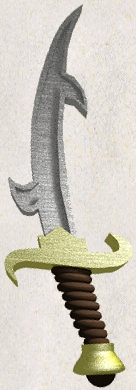
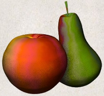
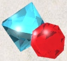

hen you find something in the dungeon, it is common to want to pick it up. In Vulture's, this is accomplished automatically by clicking on yourself while you are standing on the object or by using the , command.
If you're carrying too many items, Vulture's will tell you so and you won't be able to pick up anything more. Otherwise, it will add the object(s) to your pack and tell you what you just picked up.
As you add items to your inventory, you also add the weight of that object to your load. The amount that you can carry depends on your strength and your constitution. The stronger you are, the less the additional load will affect you. There comes a point, though, when the weight of all of that stuff you are carrying around with you through the dungeon will encumber you. Your reactions will get slower and you'll burn calories faster, requiring food more frequently to cope with it. Eventually, you'll be so overloaded that you'll either have to discard some of what you're carrying or collapse under its weight.
Vulture's will tell you how badly you have loaded yourself. The symbols ‘Burdened’, ‘Stressed’, ‘Strained’, ‘Overtaxed’ and ‘Overloaded’ are displayed in the status window to indicate your condition.
When you pick up an object, it is assigned an inventory letter. Many commands that operate on objects must ask you to find out which object you want to use. When NetHack asks you to choose a particular object you are carrying, you are usually presented with a list of inventory letters to choose from (see Commands).
Some objects, such as weapons, are easily differentiated. Others, like scrolls and potions, are given descriptions which vary according to type. During a game, any two objects with the same description are the same type. However, the descriptions will vary from game to game.
When you use one of these objects, if its effect is obvious, NetHack will remember what it is for you. If its effect isn't extremely obvious, you will be asked what you want to call this type of object so you will recognize it later. You can also use the “#name” command for the same purpose at any time, to name all objects of a particular type or just an individual object. When you use “#name” on an object which has already been named, specifying a space as the value will remove the prior name instead of assigning a new one.
7.1. Curses and Blessings
Any object that you find may be cursed, even if the object is otherwise helpful. The most common effect of a curse is being stuck with (and to) the item. Cursed weapons weld themselves to your hand when wielded, so you cannot unwield them. Any cursed item you wear is not removable by ordinary means. In addition, cursed arms and armor usually, but not always, bear negative enchantments that make them less effective in combat. Other cursed objects may act poorly or detrimentally in other ways.
Objects can also be blessed. Blessed items usually work better or more beneficially than normal uncursed items. For example, a blessed weapon will do more damage against demons.
There are magical means of bestowing or removing curses upon objects, so even if you are stuck with one, you can still have the curse lifted and the item removed. Priests and Priestesses have an innate sensitivity to this property in any object, so they can more easily avoid cursed objects than other character roles.
An item with unknown status will be reported in your inventory with no prefix. An item which you know the state of will be distinguished in your inventory by the presence of the word “cursed”, “uncursed” or “blessed” in the description of the item.
7.2. Weapons
Given a chance, most monsters in the Mazes of Menace will gratuitously try to kill you. You need weapons for self-defense (killing them first). Without a weapon, you do only 1-2 hit points of damage (plus bonuses, if any). Monk characters are an exception; they normally do much more damage with bare hands than they do with weapons.
There are wielded weapons, like maces and swords, and thrown weapons, like arrows and spears. To hit monsters with a weapon, you must wield it and attack them, or throw it at them. You can simply elect to throw a spear. To shoot an arrow, you should first wield a bow, then throw the arrow. Crossbows shoot crossbow bolts. Slings hurl rocks and (other) stones (like gems).
Enchanted weapons have a “plus” (or “to hit enhancement” which can be either positive or negative) that adds to your chance to hit and the damage you do to a monster. The only way to determine a weapon's enchantment is to have it magically identified somehow. Most weapons are subject to some type of damage like rust. Such “erosion” damage can be repaired.
The chance that an attack will successfully hit a monster, and the amount of damage such a hit will do, depends upon many factors. Among them are: type of weapon, quality of weapon (enchantment and/or erosion), experience level, strength, dexterity, encumbrance, and proficiency. The monster's armor class - a general defense rating, not necessarily due to wearing of armor - is a factor too; also, some monsters are particularly vulnerable to certain types of weapons.
Many weapons can be wielded in one hand; some require both hands. When wielding a two-handed weapon, you can not wear a shield, and vice versa. When wielding a one-handed weapon, you can have another weapon ready to use by setting things up with the x command, which exchanges your primary (the one being wielded) and alternate weapons. And if you have proficiency in the “two weapon combat” skill, you may wield both weapons simultaneously as primary and secondary; use the ‘#twoweapon’ extended command to engage or disengage that. Only some types of characters (barbarians, for instance) have the necessary skill available. Even with that skill, using two weapons at once incurs a penalty in the chance to hit your target compared to using just one weapon at a time.
There might be times when you'd rather not wield any weapon at all. To accomplish that, wield ‘-’, or else use the A command which allows you to unwield the current weapon in addition to taking off other worn items.
Those of you in the audience who are AD&D players, be aware that each weapon which existed in AD&D does roughly the same damage to monsters in NetHack. Some of the more obscure weapons (such as the aklys, lucern hammer, and bec-de-corbin) are defined in an appendix to Unearthed Arcana, an AD&D supplement.
The commands to use weapons are
- w (wield),
- t (throw),
- f (fire, an alternative way of throwing),
- Q (quiver),
- x (exchange),
- ‘#twoweapon’, and
- ‘#enhance’.
7.2.1. Throwing and shooting
You can throw just about anything via the t command. It will prompt for the item to throw; picking ‘?’ will list things in your inventory which are considered likely to be thrown, or picking ‘*’ will list your entire inventory. After you've chosen what to throw, you will be prompted for a direction rather than for a specific target. The distance something can be thrown depends mainly on the type of object and your strength. Arrows can be thrown by hand, but can be thrown much farther and will be more likely to hit when thrown while you are wielding a bow.
You can simplify the throwing operation by using the Q command to select your preferred “missile”, then using the f command to throw it. You'll be prompted for a direction as above, but you don't have to specify which item to throw each time you use f. There is also an option, autoquiver, which has NetHack choose another item to automatically fill your quiver when the inventory slot used for Q runs out.
Some characters have the ability to fire a volley of multiple items in a single turn. Knowing how to load several rounds of ammunition at once — or hold several missiles in your hand — and still hit a target is not an easy task. Rangers are among those who are adept at this task, as are those with a high level of proficiency in the relevant weapon skill (in bow skill if you're wielding one to shoot arrows, in crossbow skill if you're wielding one to shoot bolts, or in sling skill if you're wielding one to shoot stones). The number of items that the character has a chance to fire varies from turn to turn. You can explicitly limit the number of shots by using a numeric prefix before the t or f command. For example, “n2f” would ensure that at most 2 arrows are shot even if you could have fired 3. If you specify a larger number than would have been shot (“n4f” in this example), you'll just end up shooting the same number (3, here) as if no limit had been specified. Once the volley is in motion, all of the items will travel in the same direction; if the first ones kill a monster, the others can still continue beyond that spot.
7.2.2. Weapon proficiency
You will have varying degrees of skill in the weapons available. Weapon proficiency, or weapon skills, affect how well you can use particular types of weapons, and you'll be able to improve your skills as you progress through a game, depending on your role, your experience level, and use of the weapons.
For the purposes of proficiency, weapons have been divided up into various groups such as daggers, broadswords, and polearms. Each role has a limit on what level of proficiency a character can achieve for each group. For instance, wizards can become highly skilled in daggers or staves but not in swords or bows.
The ‘#enhance’ extended command is used to review current weapons proficiency (also spell proficiency) and to choose which skill(s) to improve when you've used one or more skills enough to become eligible to do so. The skill rankings are “none” (sometimes also referred to as “restricted”, because you won't be able to advance), “unskilled”, “basic”, “skilled”, and “expert”. Restricted skills simply will not appear in the list shown by ‘#enhance’. (Divine intervention might unrestrict a particular skill, in which case it will start at unskilled and be limited to basic.) Some characters can enhance their barehanded combat or martial arts skill beyond expert to “master” or “grand master”.
Use of a weapon in which you're restricted or unskilled will incur a modest penalty in the chance to hit a monster and also in the amount of damage done when you do hit; at basic level, there is no penalty or bonus; at skilled level, you receive a modest bonus in the chance to hit and amount of damage done; at expert level, the bonus is higher. A successful hit has a chance to boost your training towards the next skill level (unless you've already reached the limit for this skill). Once such training reaches the threshold for that next level, you'll be told that you feel more confident in your skills and a golden plus will be displayed above the top right corner of the status window. At that point you can click on the plus or use ‘#enhance’ to increase one or more skills. Such skills are not increased automatically because there is a limit to your total overall skills, so you need to actively choose which skills to enhance and which to ignore.
7.3. Armor
Lots of unfriendly things lurk about; you need armor to protect yourself from their blows. Some types of armor offer better protection than others. Your armor class is a measure of this protection. Armor class (AC) is measured as in AD&D, with 10 being the equivalent of no armor, and lower numbers meaning better armor. Each suit of armor which exists in AD&D gives the same protection in NetHack. Here is an (incomplete) list of the armor classes provided by various suits of armor:
| dragon scale mail | 1 |
| plate mail | 3 |
| crystal plate mail | 3 |
| bronze plate mail | 4 |
| splint mail | 4 |
| banded mail | 4 |
| dwarvish mithril-coat | 4 |
| elven mithril-coat | 5 |
| chain mail | 5 |
| orcish chain mail | 6 |
| scale mail | 6 |
| studded leather armor | 7 |
| ring mail | 7 |
| orcish ring mail | 8 |
| leather armor | 8 |
| leather jacket | 9 |
| no armor | 10 |
You can also wear other pieces of armor (ex. helmets, boots, shields, cloaks) to lower your armor class even further, but you can only wear one item of each category (one suit of armor, one cloak, one helmet, one shield, and so on) at a time.
If a piece of armor is enchanted, its armor protection will be better (or worse) than normal, and its “plus” (or minus) will subtract from your armor class. For example, a +1 chain mail would give you better protection than normal chain mail, lowering your armor class one unit further to 4. When you put on a piece of armor, you immediately find out the armor class and any “plusses” it provides. Cursed pieces of armor usually have negative enchantments (minuses) in addition to being unremovable.
Many types of armor are subject to some kind of damage like rust. Such damage can be repaired. Some types of armor may inhibit spell casting.
The commands to use armor are W (wear) and T (take off). The A command can also be used to take off armor as well as other worn items.
7.4. Food
Food is necessary to survive. If you go too long without eating you will faint, and eventually die of starvation. Some types of food will spoil, and become unhealthy to eat, if not protected. Food stored in ice boxes or tins (“cans”) will usually stay fresh, but ice boxes are heavy, and tins take a while to open.
When you kill monsters, they usually leave corpses which are also “food.” Many, but not all, of these are edible; some also give you special powers when you eat them. A good rule of thumb is “you are what you eat.”
Some character roles and some monsters are vegetarian. Vegetarian monsters will typically never eat animal corpses, while vegetarian players can, but with some rather unpleasant side-effects.
You can name one food item after something you like to eat with the fruit option.
The command to eat food is e.
7.5. Scrolls

Scrolls are labeled with various titles, probably chosen by ancient wizards for their amusement value (ex. “READ ME,” or “THANX MAUD” backwards). Scrolls disappear after you read them (except for blank ones, without magic spells on them).
One of the most useful of these is the scroll of identify, which can be used to determine what another object is, whether it is cursed or blessed, and how many uses it has left. Some objects of subtle enchantment are difficult to identify without these.
A mail daemon may run up and deliver mail to you as a scroll of mail (on versions compiled with this feature). To use this feature on versions where NetHack mail delivery is triggered by electronic mail appearing in your system mailbox, you must let NetHack know where to look for new mail by setting the “MAIL” environment variable to the file name of your mailbox. You may also want to set the “MAILREADER” environment variable to the file name of your favorite reader, so NetHack can shell to it when you read the scroll. On versions of NetHack where mail is randomly generated internal to the game, these environment variables are ignored. You can disable the mail daemon by turning off the mail option.
The command to read a scroll is r.
7.6. Potions

Potions are magical liquids that usually have some sort of noticeable effect on you when drink them (Command: q for quaff). Each different type of potion appears as a flask of liquid of a certain color or description (i.e. a red potion or a smoky potion, etc.). Once you identify what a particular type of potion does (via an Identify spell/scroll or through usage or viewed effects), all other potions of that type will be the same (i.e. all swirly potions might turn out to be potions of levitation). Any further potions found that are of the same type will be referred to by their identified function (i.e. "a potion of extra-healing" as opposed to "an orange potion"). This scheme does NOT (for the most part) carry over from game to game; each new character you play will have the task of identifying their particular set of potions.
You cannot taste a small amount of a potion in order to see what it will do, you have to quaff the whole thing. Be forewarned however - drinking unidentified potions could be helpful or harmful or just plain hilarious! When you quaff a potion, you may get a message or obvious effect that will help you to identify it. However, it is possible that you will get no indication at all as to a potion's effect or identity.
Certain types of potions will lend themselves to uses other than drinking. You might throw (Command: t) them at your enemies, for example...and achieve "various" results. Another way to use a potion in combat might be to wield it (Command: w) and engage your adversary in hand to hand combat. Even if you do not hit an enemy directly with a thrown or bashed potion, they may be affected by vapors which escape as the flask shatters to smithereens.
Potions can also have object dipped (Command: alt-d or "#d") into them. Dipping an object does not always have an effect, but if it does, the effect on the object might be similar to that of a person drinking the same potion (but then again, it might not...interesting!). If dipping an object into a potion has an effect, the dipping action will consume the entire potion. Nearly any size object can be dipped (even very large objects such as plate mail - think of sprinkling the potion over a large object rather than actually dipping it into a tiny flask). If the object being dipped stacks in your inventory (i.e. 23 orcish daggers), the dipping effect will be seen on all of the stacked objects.
There are also some potions that can be applied (Command: a). Your character will have to reason out which ones, and to what effect.
If a potion in your possession somehow becomes exposed to a large source of water for a short time, it may become "diluted". Have no fear...a dilute potion still retains as much magic as a full strength one. BUT, if a dilute potion is exposed to large source of water for a short time (or a full strength potion for a long time), it may completely wash away. If this occurs, what you will be left with will be a potion of....you guessed it...water!! But hey, even a potion of water has got to be useful for something (or does it?).
Finally, for those with a little bit of chemist in them, potions can be combined with other potions by dipping them into one another. When the two magical liquids mix, who knows what the results will be???
7.7. Wands
Magic wands usually have multiple magical charges. Some wands are directional — you must give a direction in which to zap them. You can also zap them at yourself (just give a ‘.’ or ‘s’ for the direction). Be warned, however, for this is often unwise. Other wands are nondirectional — they don't require a direction. The number of charges in a wand is random and decreases by one whenever you use it.
When the number of charges left in a wand becomes zero, attempts to use the wand will usually result in nothing happening. Occasionally, however, it may be possible to squeeze the last few mana points from an otherwise spent wand, destroying it in the process. A wand may be recharged by using suitable magic, but doing so runs the risk of causing it to explode. The chance for such an explosion starts out very small and increases each time the wand is recharged.
In a truly desperate situation, when your back is up against the wall, you might decide to go for broke and break your wand. This is not for the faint of heart. Doing so will almost certainly cause a catastrophic release of magical energies.
When you have fully identified a particular wand, inventory display will include additional information in parentheses: the number of times it has been recharged followed by a colon and then by its current number of charges. A current charge count of -1 is a special case indicating that the wand has been cancelled.
The command to use a wand is z (zap). To break one, use the a (apply) command.
7.8. Rings

Rings are very useful items, since they are relatively permanent magic, unlike the usually fleeting effects of potions, scrolls, and wands.
Putting on a ring activates its magic. You can wear only two rings, one on each ring finger.
Most rings also cause you to grow hungry more rapidly, the rate varying with the type of ring.
The commands to use rings are P (put on) and R (remove).
7.9. Spellbooks
Spellbooks are tomes of mighty magic. When studied with the r (read) command, they transfer to the reader the knowledge of a spell (and therefore eventually become unreadable) — unless the attempt backfires. Reading a cursed spellbook or one with mystic runes beyond your ken can be harmful to your health!
A spell (even when learned) can also backfire when you cast it. If you attempt to cast a spell well above your experience level, or if you have little skill with the appropriate spell type, or cast it at a time when your luck is particularly bad, you can end up wasting both the energy and the time required in casting.
Casting a spell calls forth magical energies and focuses them with your naked mind. Some of the magical energy released comes from within you, and casting several spells in a row may tire you. Casting of spells also requires practice. With practice, your skill in each category of spell casting will improve. Over time, however, your memory of each spell will dim, and you will need to relearn it.
Some spells are directional — you must give a direction in which to cast them. You can also cast them at yourself (just give a ‘.’ or ‘s’ for the direction). Be warned, however, for this is often unwise. Other spells are nondirectional — they don't require a direction.
Just as weapons are divided into groups in which a character can become proficient (to varying degrees), spells are similarly grouped. Successfully casting a spell exercises the skill group; sufficient skill may increase the potency of the spell and reduce the risk of spell failure. Skill slots are shared with weapons skills. (See also the section on “Weapon proficiency”.)
Casting a spell also requires flexible movement, and wearing various types of armor may interfere with that.
The command to read a spellbook is the same as for scrolls, r (read). The + command lists your current spells, their levels, categories, and chances for failure. The Z (cast) command casts a spell.
7.10. Tools
Tools are miscellaneous objects with various purposes. Some tools have a limited number of uses, akin to wand charges. For example, lamps burn out after a while. Other tools are containers, which objects can be placed into or taken out of.
The command to use tools is a (apply).
7.10.1. Containers
You may encounter bags, boxes, and chests in your travels. A tool of this sort can be opened with the ‘#loot’ extended command when you are standing on top of it (that is, on the same floor spot), or with the a (apply) command when you are carrying it. However, chests are often locked, and are in any case unwieldy objects. You must set one down before unlocking it by using a key or lock-picking tool with the a (apply) command, by kicking it (select kick from the context menu or use the ctrl+D command), or by using a weapon to force the lock with the ‘#force’ extended command.
Some chests are trapped, causing nasty things to happen when you unlock or open them. You can check for and try to deactivate traps with the ‘#untrap’ extended command.
7.11. Amulets
Amulets are very similar to rings, and often more powerful. Like rings, amulets have various magical properties, some beneficial, some harmful, which are activated by putting them on.
Only one amulet may be worn at a time, around your neck.
The commands to use amulets are the same as for rings, P (put on) and R (remove).
7.12. Gems
Some gems are valuable, and can be sold for a lot of gold. They are also a far more efficient way of carrying your riches. Valuable gems increase your score if you bring them with you when you exit.
Other small rocks are also categorized as gems, but they are much less valuable. All rocks, however, can be used as projectile weapons (if you have a sling). In the most desperate of cases, you can still throw them by hand.
7.13. Large rocks
Statues and boulders are not particularly useful, and are generally heavy. It is rumored that some statues are not what they seem.
Very large humanoids (giants and their ilk) have been known to use boulders as weapons.
7.14. Gold
Gold adds to your score, and you can buy things in shops with it. There are a number of monsters in the dungeon that may be influenced by the amount of gold you are carrying (shopkeepers aside).